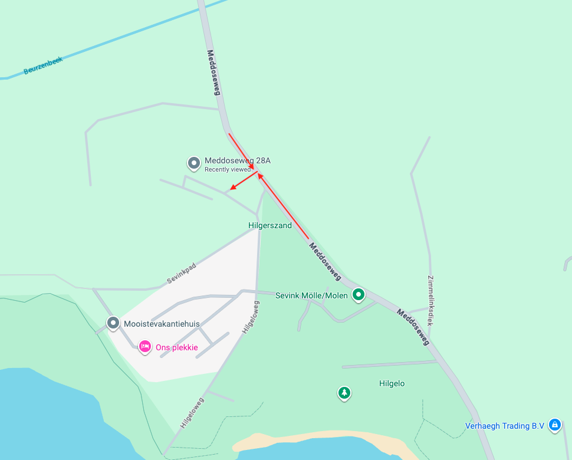

// Deelnemersbrief
ACHTERTUIN ULTRA 2026 Editie
Je hebt je opgegeven, je hebt betaald, je had nog kunnen annuleren, maar je bent er gewoon bij. Nog iets minder dan een maand en dan is het zover.
Met bijna veertig deelnemers van allerlei leeftijden en met heel wisselende hardloopachtergronden hoef je niet alleen te strijden. In deze brief praten we je bij over wat jij mag verwachten en wat wij van jou verwachten.
Belangrijk Lees deze brief volledig door, zodat je goed voorbereid aan de start staat.
📌 Algemeen
- Locatie
- Nabij Meddoseweg 28A in Winterswijk
- Parkeren
- Gratis op de aangegeven plaatsen
- Aanmelden
- Zaterdag 09-05-2026 tussen 08:00 en 09:00
- Instructie
- Zaterdag 09-05-2026 stipt 09:30 (verplichte deelname)
- Start eerste ronde
- Zaterdag 09-05-2026 10:00
- Start laatste ronde
- Zondag 10-05-2026 09:00

⚖️ Verantwoordelijkheid
Als organisatie hebben wij maatregelen genomen die bijdragen aan jouw veiligheid. Echter betekent dat niet dat wij het risico voor je dragen. Als jij start op de AU2026 ga jij ermee akkoord dat jij zelf geheel aansprakelijk bent voor alle risico's en dat niets op de organisatie te verhalen is.
📝 Aanmelding
Op de startlocatie vind je een tafel waar je je kunt aanmelden. We checken samen nog even een aantal zaken:
- Hebben wij de juiste ICE-gegevens?
- Heb je het nummer van de organisatie in je telefoon staan?
- Heb je verlichting voor onderweg bij je?
Als dat in orde is krijg je jouw eigen welkomstpakket en begeleiden wij jou naar het basiskamp.
🏕️ Inrichting Basiskamp
Je krijgt een plek toegewezen in het basiskamp. Hier kun je jouw stoel en spullen neerzetten en de voorbereidingen treffen voor de race: eten en drinken klaarzetten, kleding en hoofdlamp een vaste plek geven, enzovoort.
Tot aan de instructie (09:30) heb je de tijd om jouw plek in het basiskamp in te richten, je reisgenoten vast een beetje te leren kennen en jezelf startklaar te maken.
Op het basiskamp is geen stroom beschikbaar voor deelnemers. Je zult zelf moeten zorgen voor een powerbank of iets dergelijks om te voorkomen dat je telefoon, hoofdlamp of horloge leeg raakt.
In het basiskamp is overdekte plaats om droog te zitten als het regent of beschutting tegen de zon te vinden. Er zijn ook volledig gesloten tenten beschikbaar als kleedruimtes voor dames en heren apart.
🕤 Instructie
Om klokslag halftien vindt de instructie plaats. Aanwezigheid bij deze instructie is verplicht.
We verwachten jou hier startklaar, dus zorg dat je voordien alles regelt wat je wilt regelen.
📋 Spelregels
Let op: onderstaande regels zijn bindend voor alle deelnemers.
- Elk uur start een ronde. Je race gaat door totdat je de ronde niet meer kunt of wilt afmaken.
- Doe je 45 minuten over je ronde? Dan heb je 15 minuten pauze om uit te rusten, te eten en te drinken voordat je op het hele uur weer aan de nieuwe ronde start.
- Stoppen kan alleen tijdens of direct na een ronde.
- Als je niet expliciet uit de race stapt voordat je het comfort van je eigen plekje opzoekt, wordt je geacht de volgende ronde weer te starten.
- Eenmaal gestopt, dan is later weer instappen niet toegestaan.
- Je afstand inkorten kan eenmalig op elk gewenst moment: van de lange naar de korte ronde. Van kort naar lang overstappen is niet toegestaan.
- Tijdens de gehele AU2026 moet je je houden aan de verkeersregels. Er kunnen andere verkeersdeelnemers op het parcours aanwezig zijn.
- Wees niemand tot last, in geen enkel opzicht.
- Omkleden: alleen in de daarvoor ingerichte tenten. Buiten de omkleedtent draagt iedereen onder- en bovenkleding.
- Alcohol en drugs zijn strikt verboden.
- Toiletteren alleen op het toilet (dus niet onderweg).
- De organisatie kan jou elk moment uit de race nemen (zie het kopje Hulp en persoonlijke veiligheid).
- Regel(s) overtreden betekent direct de spullen pakken en naar huis.
🧭 Route
De route gaat grotendeels over onverhard terrein (gras, gravel, bospad) en voert deels over privéterreinen. Het parcours wordt om die reden pas vrijgegeven op de wedstrijddag. De gehele route wordt uitgepijld. De pijlen staan altijd rechts van je.
De route wordt niet verlicht. Je wordt geacht verlichting voor tijdens het lopen mee te nemen. Dit is niet alleen om zichtbaar te zijn voor anderen, maar vooral om het pad voor je goed te kunnen zien en het risico op struikelpartijen of verzwikkingen te verminderen. Een goede hoofdlamp is essentieel.
Na de start volgen alle lopers de rode pijlen tot aan een duidelijk aangegeven splitsing op circa 2,5 km. Op de splitsing liggen rode en blauwe elastieken klaar. Deze elastieken worden gebruikt voor de rondetelling.
Rood elastiek · korte ronde (2,75 km): pak één rood elastiek en vervolg de rode route.
Blauw elastiek · lange ronde (5 km): pak één blauw elastiek en ga verder op de blauwe route.
Nadat je over de finish gekomen bent hang jij jouw elastiek op de aangegeven plaats op.
🆘 Hulp en Persoonlijke Veiligheid
Tijdens de AU2026 zal er iemand van de organisatie aanwezig zijn op of rond het parcours. Mocht er iets aan de hand zijn dan kun je hen om hulp vragen.
Hulp vragen kun je ook doen door te bellen met 06-34841303 (sla dit nummer op in je telefoon, we checken dit bij aanmelding). In noodgevallen bel je natuurlijk altijd direct met 112.
Wij verwachten dat jij er helemaal voor gaat en dat vinden wij prachtig. Tegelijkertijd kan het opzoeken van jouw grenzen ertoe leiden dat je er te ver overheen gaat. Omdat je dit zelf niet altijd goed kunt opmerken proberen wij jou zo goed mogelijk in de gaten te houden.
Als het naar het oordeel van onze staf verstandig is om te stoppen, halen wij jou uit de race voor jouw eigen bestwil. Veiligheid gaat boven alles.
💡 Ongevraagd Advies
Een avontuur als dit vraagt om een strategie. Probeer nu alvast te bedenken wat voor jou werkt.
Eten en drinken
Start met eten en drinken vanaf ronde 1, niet pas als je merkt dat je het nodig hebt. Bij 5 kilometer hardlopen verbrand je ongeveer 300-500 kcal (afhankelijk van onder meer gewicht en tempo). Dat kun je niet 1-op-1 compenseren met voeding, maar probeer 200-400 kcal per uur binnen te krijgen.
De organisatie stelt in beperkte mate energiegels en sportdrank ter beschikking. Ga hier sociaal mee om. Verder is er een watertappunt en een simpele maaltijd van pasta met tomatensaus beschikbaar. Je kunt één ronde vooraf aangeven dat je hier gebruik van wilt maken.
Dit is niet genoeg voor iedereen; zorg zelf voor je eigen energievoorziening. Typische ultraloopsnacks: fruit, chips, noten, cola, chocolade, winegums, crackers, stroopwafels, kleine wraps, pannenkoeken, enzovoort.
Omkleden
Na het lopen kom je bezweet in het basiskamp aan. Als je dan even stilstaat koel je supersnel af, zeker als het weer omslaat. De kou vreet energie en kan een serieus risico vormen. Zorg dat je tussendoor warm en droog wordt en/of blijft.
Trek droge kleren aan, neem een slaapzak, skipak of iets anders warms mee en reken op veel kledingwissels. Zorg ook dat je in de regen zo droog mogelijk kunt lopen.
Schone frisse kleren, droge sokken of een ander paar schoenen kunnen een mentale reset geven als je al uren bezig bent.
Mindset
Denk niet te veel na over de hele onderneming als één lange afstand. Neem elke keer de beslissing voor de eerstvolgende ronde, niets meer en niets minder.
"De zwaarste afstand is die van je comfortabele stoel naar de startlijn."
Tempo
Dit evenement gaat om de balans tussen twee tegengestelden: zo rustig mogelijk lopen om energie te sparen en tegelijk zo lang mogelijk rustpauze overhouden. Onze tip: loop in een conservatief tempo met iets minder rust.
Toiletbezoek
Omdat onderweg je behoefte doen verboden is, moet dit in de pauze. We hebben twee toiletten en ongeveer veertig deelnemers. Wacht dus niet tot op het laatste moment.
Opfrissen
Er staat een geïmproviseerde wasgelegenheid klaar. Even wat water door je gezicht of plakkerige gel van je handen kan wonderen doen. Vergeet ook je tandenborstel niet tussendoor.
👏 Supporters
De door jullie uitgenodigde supporters zijn gedurende de gehele race van harte welkom. Als er op het terrein plek is kan daar gratis geparkeerd worden. Past het niet, dan kan men tegen betaling parkeren bij Leisurelands 't Hilgelo.
Voor supporters is er een groot deel van de dag koffie, thee, frisdrank en snacks beschikbaar tegen minimale betaling. Er zijn tafels en banken om te zitten; een eigen campingstoel meenemen is ook een goed idee.
❤️ Goed Doel
Op het evenement is een tafel van The Lighthouse Sports Foundation aanwezig. Ambassadeur Noah Brethouwer zal ook deelnemen aan de race in zijn speciale sportrolstoel. Hij en de mensen om hem heen hebben een hoopvol en inspirerend verhaal te vertellen.
Bij de tafel van The Lighthouse Sports Foundation kun je een presentje kopen waarvan de opbrengst wordt gebruikt om de stichting te steunen. Uiteraard mag je ook een vrije donatie doen.
🎒 Paklijst Ter Inspiratie
Tip: leg je spullen per categorie klaar zodat je tussen rondes snel kunt wisselen.
Tijdens het lopen
- Loopschoenen (2 paar)
- Loopsokken (5 paar)
- Shorts (3 stuks)
- Shirts (5 stuks)
- Longsleeve/thermo
- Lange loopbroek/thermo broek
- Pet
- Regenjas
- Regenbroek
- Horloge
- Hoofdlamp
- Reserve batterijen/reserve hoofdlamp
Eten en drinken
- Water
- Cola
- Sportdrank
- Energiegels
- Stroopwafels
- Bananen
- Pannenkoeken
- Chips
Tussendoor/na afloop
- Skibroek
- Fleece trui
- 2 katoenen shirts
- Joggingbroek
- Droge dikke sokken
- Handdoek
Overigen
- Zonnebrand
- Vaseline (tegen schuurplekken)
- Powerbank
- Laadkabel telefoon
- Laadkabel horloge
- Laadkabel hoofdlamp
- Tandenborstel + tandpasta
- EHBO-kit (o.a. blarenpleisters, nooddeken, paracetamol)
- Klapstoel
- Paraplu
🏁 Afsluitend
Hopelijk hebben jullie er net zoveel zin in als wij. We vinden het ongelooflijk dat er zoveel mensen zijn die dit avontuur willen aangaan en doen ons best om er een mooie en onvergetelijke dag van te maken.
Als er vragen of onduidelijkheden zijn kun je ons mailen op achtertuin.ultra@gmail.com.
We zien elkaar over 3 weken op 9 mei voor een lekker potje afzien bij de AU 2026. Run. Rest. Repeat. Regret.